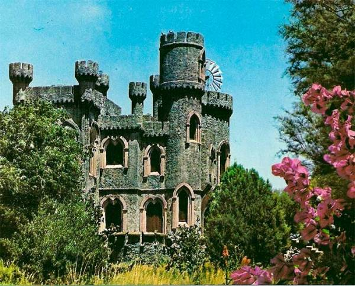
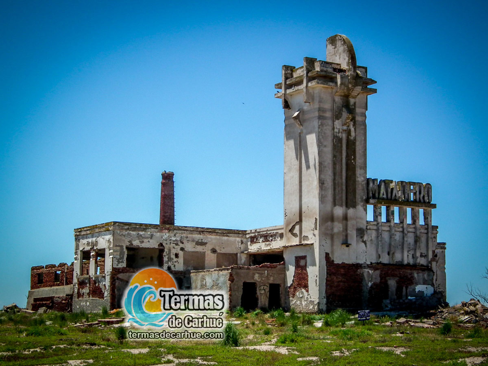
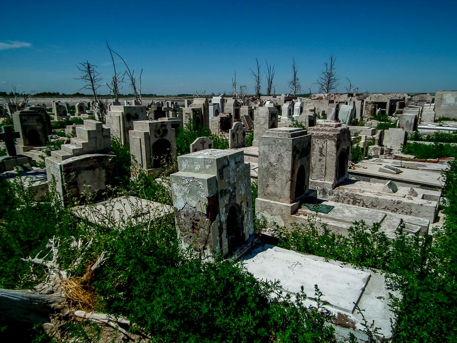
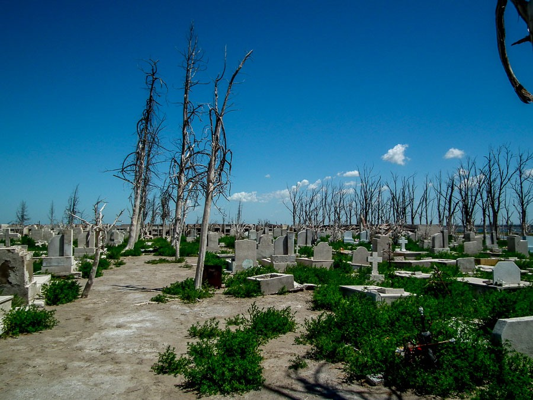
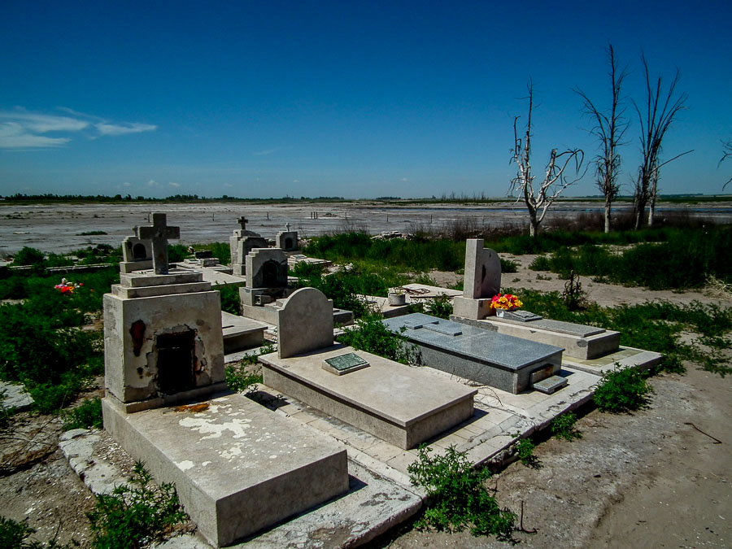
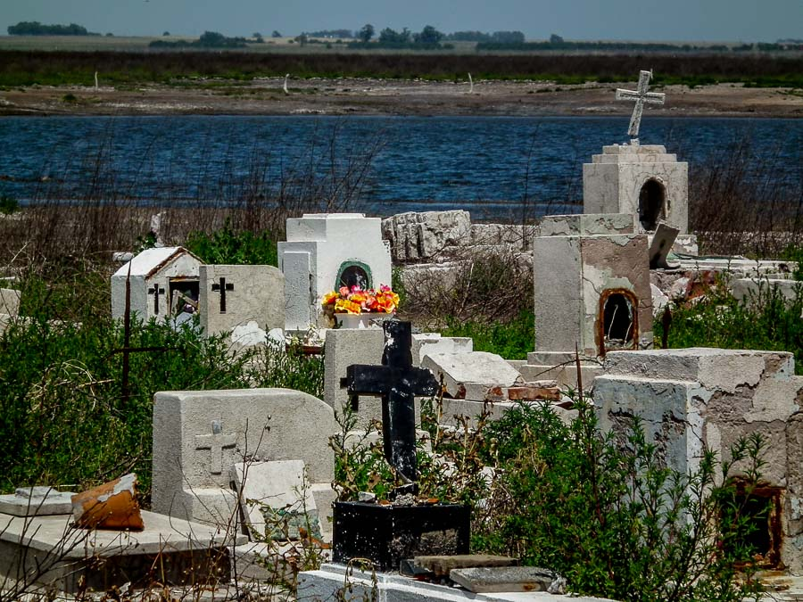

Sitios Históricos
EL CASTILLO DE CARHUÉ
Fue en realidad de los tantos chalets de veraneo que se levantaron entre el camino y el lago Epecuén, cuyo recorrido era de ocho kilómetros desde Carhué, ciudad cabecera del distrito. Esta construcción circular atraía poderosamente la atención a simple vista y, sobre él, se han tenido las variadas y fantásticas leyendas, pero siendo la verdad completamente distinta.
Con respecto a su origen, podemos señalar que lo hizo construir la Señora Ernestina María Allaire, dama de origen francés que se casó en su patria con un noble polaco de apellido Mestchevsky, coronel de La Legión Extranjera en Francia, durante la primera guerra mundial. Este militar desapareció en la célebre batalla de Marne. Este episodio decidió a la viuda de Mestchevsky, a trasladarse a América. Primeramente se radicó en Paraguay, y luego, más tarde en nuestro país adquiriendo una estancia en la provincia de Córdoba, donde hizo levantar una casona al estilo de los castillos de Normanda.
Enterada años más tarde la condesa de las bondades de las aguas del Lago Epecuén, resolvió trasladarse a Carhué, localidad en la cual adquirió una fracción de tierras, en la cual hizo levantar otro chalet que remedaba en su aspecto a los palacios fortificados de su suelo patrio, con la diferencia que este sería mucho más pequeño. Su construcción comenzó en 1924 finalizándose en 1925. Para citar un detalle, podemos mencionar que fue el Señor Carlos Bianconi, viejo artífice de las carpinterías de lujo de las grandes mansiones porteñas, el que instalo la carpintería en este castillo.
CASTILLO CHICO
Está construcción estaba dedicada al personal de servicio y constaba de dos habitaciones, cocina, baño lavadero y garaje, teniendo el estilo del grande.
En el parque existía una reproducción de la gruta de Lourdes, construida en rocas de diferentes tamaños que servía de refugio a ocho personas, con fogón al centro y bancos confeccionados con las mismas piedras, que formaban las paredes y arcos. A la par de la gruta, formaron tres lagos de distintas profundidades, separados por dos puentes, uno angosto para el paso de hombres y otro ancho para carruajes, los espejos de agua estaban adornados por peces de varios colores, siendo su superficie aproximada 200 m2 alimentados en forma de manantial que se desprendía por sobre el techo de la gruta, en forma de cascada.
El edificio estaba ubicado en un parque cuya forestación consistía en, eucaliptos, pinos, tujas, tamariscos, pita, yuca y plantas de flores de todo tipo y temporadas.
Para completar, mencionamos que en el Castillo, las puertas eran de roble macizo, provistas de grandes cerrojos de seguridad, todo dentro del estilo que caracterizaba a los castillos de la baja Normanda.
EL EX MATADERO DE EPECUÉN
En la vasta pampa se elevan las inmensas obras del arquitecto e ingeniero Francisco Salamone.
A mediados de la década del ’30, Salamone proyectó y dirigió estas obras que se destacan dentro de la arquitectura de la ciudad.
Ubicado entre la ciudad de Carhué y las ruinas de Villa Epecúen, un pueblo arrasado por las inundaciones de 1985, es uno de los mataderos más enigmáticos. Fue un emblema de la época e intento seguir faenando pese a estar cercado por agua. En la actualidad naturaleza muerta que lo rodea, hace del paraje una postal idílica.
EL CEMENTERIO ABANDONADO DE CARHUÉ
La experiencia de visitar el antiguo y abandonado cementerio en las Termas de Carhué, junto al lago Epecuén, es una mezcla de dolor, tristeza y admiración.
La desolación que provocan las tumbas, el deterioro por la inundación y la acción del hombre demoliendo las cúpulas que sobresalían del agua, es solo compensable por el efecto del sulfato que deja blanco todo lo que toca, más algunas lápidas intactas de llamativa calidad artista.
En 1985 una sudestada sepultó el destino de una de las villas turísticas más pujantes de la época en la provincia de Buenos Aires. Ubicada a 11 kilómetros de Carhué, la localidad de Epecuén tenía una población estable de 1.500 personas y la capacidad para recibir 5.000 visitantes. Todo quedó bajo el agua cuando se perforó el terraplén que contenía la fuerza del lago Epecuen.
Las ruinas muestran tumbas semi derruidas, algunas reconstruidas y la zona donde se ubicaban los nichos que fue dinamitado y solo quedan pilas de escombros. Sumado a estos, se encuentran los árboles petrificados por la sal que tienen una forma única.
Un cementerio abandonado por una inundación que rompió la mayoría de las tumbas pero siguen suficientemente en pié como para darle un aspecto espeluznante y artístico a la márden del lago termal en Carhué.
   